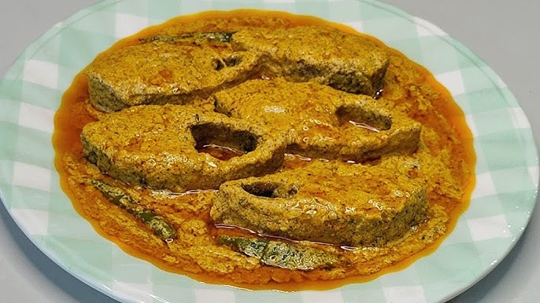

Shorshe Ilish
Home

Description
Hilsa fish cooked in a pungent mustard paste, a signature Bengali delicacy often served with steamed rice.
Ingredients
- Hilsh fish pieces
- Mustard seeds
- Mustard oil
- Green chilies
- Turmeric powder
- Salt
Steps
- Rub fish pieces with turmeric and salt, set aside.
- Heat mustard oil until smoking, then cool slightly.
- Add mustard paste, green chilies, and a little water.
- Place fish pieces gently into the gravy.
- Cover and simmer for 10–12 minutes until cooked.
- Serve hot with plain rice.